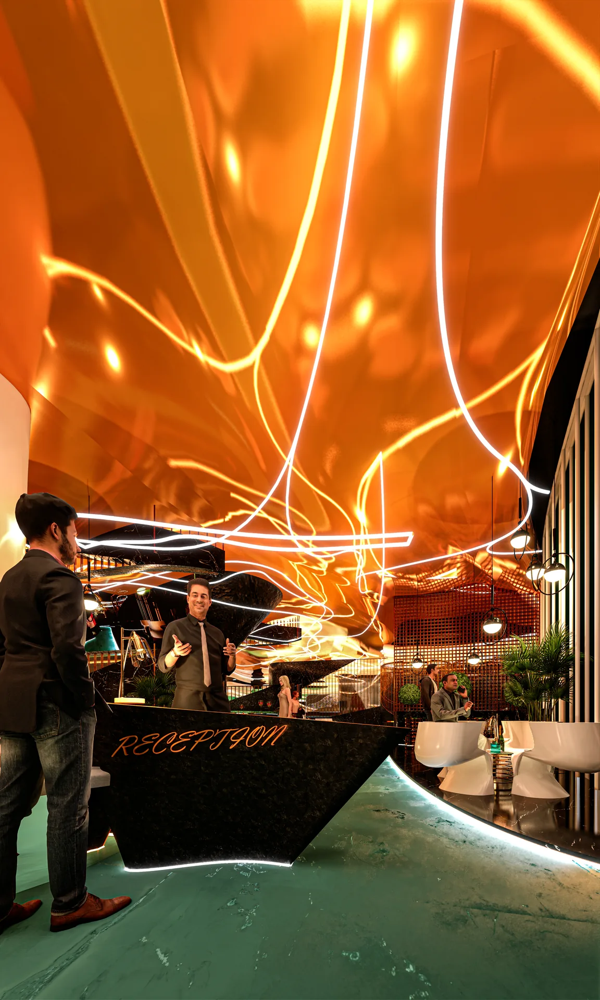
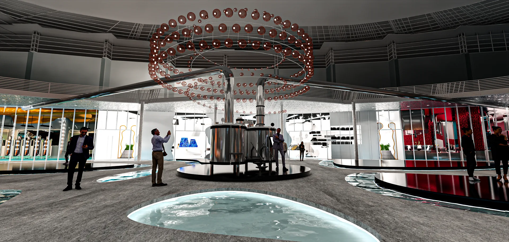
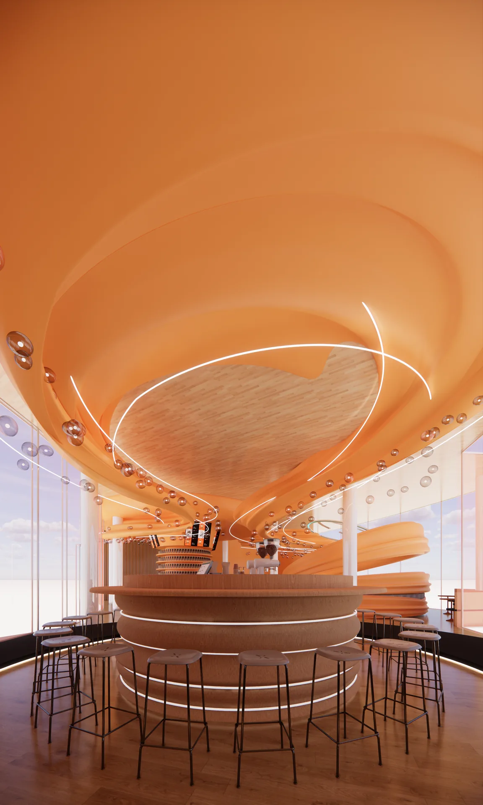
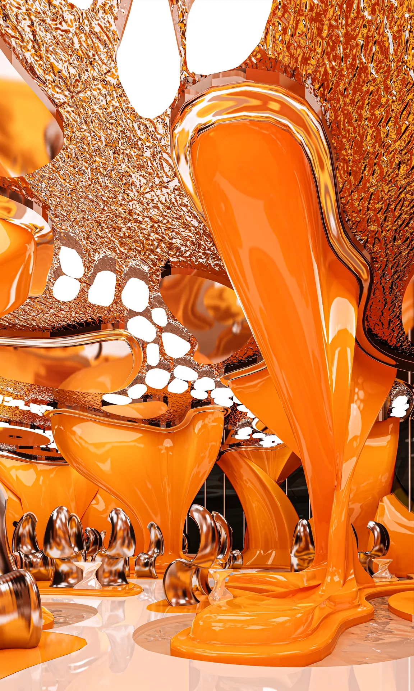
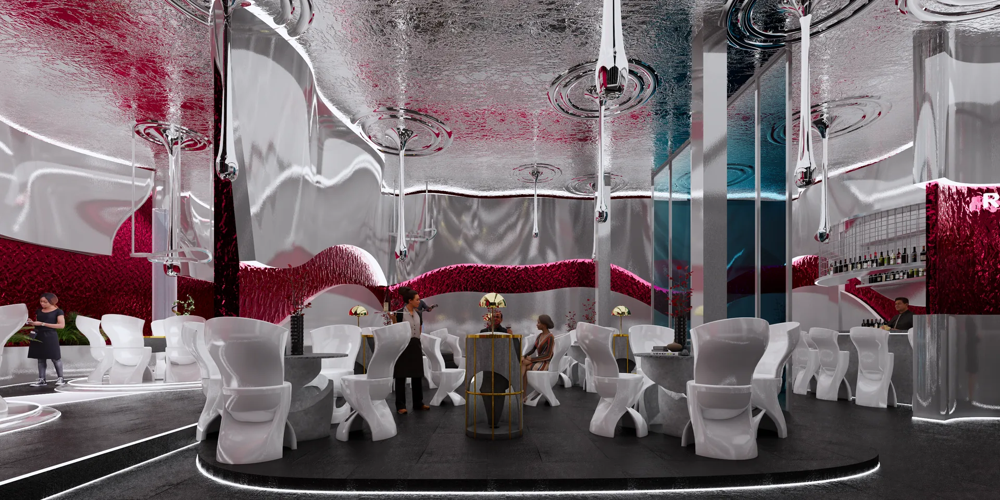
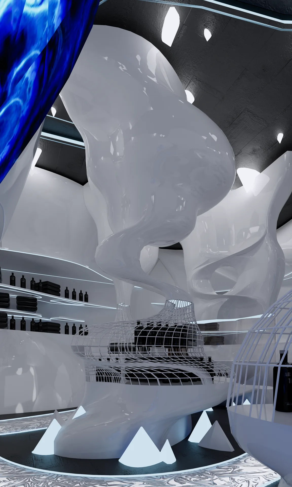
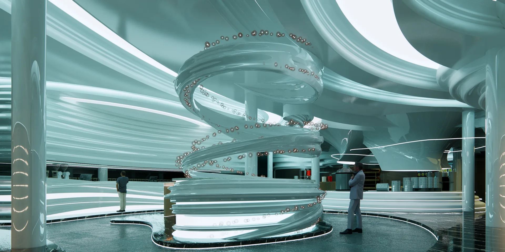
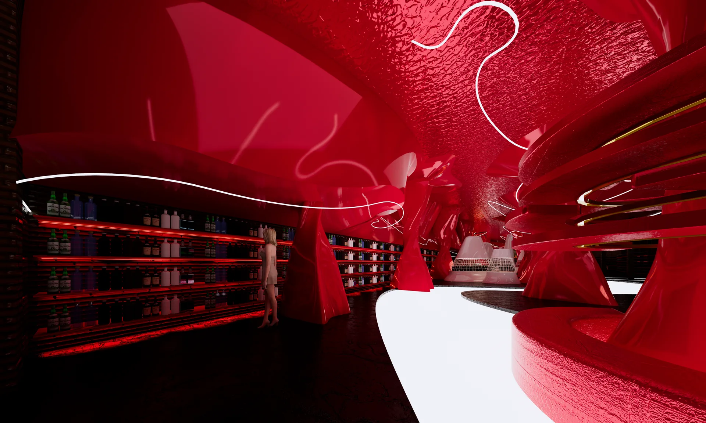
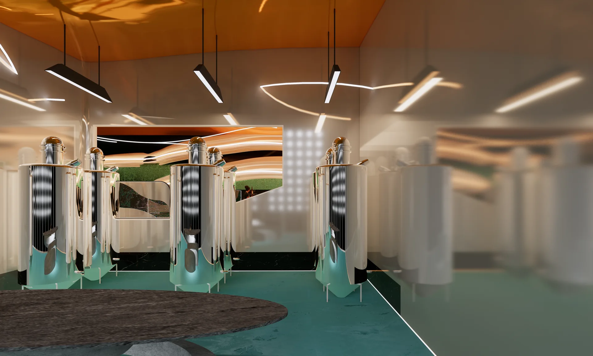
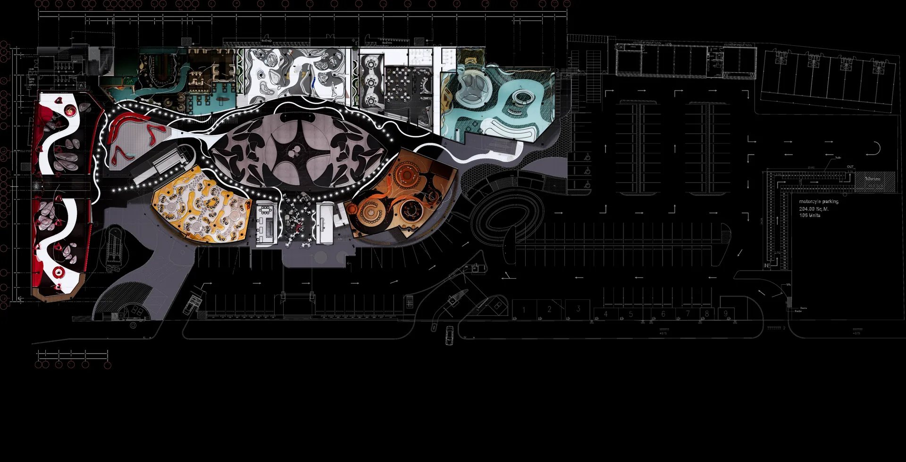

Selected interior project
THESIS · INTERIOR ARCHITECTURE
THESIS
พื้นที่ที่เชื่อมการพบปะ การเรียนรู้ และประสบการณ์เข้าด้วยกัน ผ่านการวางแผนพื้นที่และบรรยากาศที่ต่อเนื่องPROJECT OVERVIEW
A shared destination
for people and ideas.
โครงการออกแบบสถาปัตยกรรมภายในที่รวมพื้นที่สาธารณะและพื้นที่กิจกรรมหลากหลายรูปแบบ ตั้งแต่โถงต้อนรับ คาเฟ่ ร้านอาหาร พื้นที่ประชุม ร้านค้า ไปจนถึงพื้นที่เวิร์กช็อป
- TYPE
- Interior Architecture
- YEAR
- 2024
- SCOPE
- Planning · 3D · Drawing

Arrival and gathering spaceExplore space →

Social and refreshment spaceExplore space →

Flexible collaboration areaExplore space →
SPATIAL PROGRAM
One place.
Many ways to use it.

Dining and shared social spaceExplore space →

Curated product experienceExplore space →

Immersive shopping environmentExplore space →

Display and tasting experienceExplore space →

Creative learning and activity spaceExplore space →
DESIGN DEVELOPMENT · 01
From spatial strategy
to visual experience.
ผังพื้นที่ถูกพัฒนาจากลำดับการใช้งาน การเคลื่อนไหว และความสัมพันธ์ของกิจกรรม เพื่อสร้างประสบการณ์ที่ต่อเนื่องตลอดทั้งโครงการ

DESIGN DEVELOPMENT · 02
Spatial views
in motion.
ภาพ Isometric แสดงภาพรวมของรูปทรง บรรยากาศ และความสัมพันธ์ระหว่างแต่ละพื้นที่


THESIS ARCHIVE